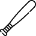
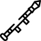

Arlequina
Arlequina (nome verdadeiro Dra. Harleen Frances Quinzel) é uma personagem fictícia criado pelos americanos Paul Dini e Bruce Timm para a DC Comics. Quinn fez sua estréia no vigésimo segundo episódio de Batman: The Animated Series, "The Joker's Favor", em setembro de 1992 e se tornou uma vilã recorrente na série, possuindo excelente agilidade e sendo rápida em uma luta, ela acaba de ser ultrapassada por Batman e o Coringa. Sua agilidade se deve ao fato de ser ginasta e acrobata.

